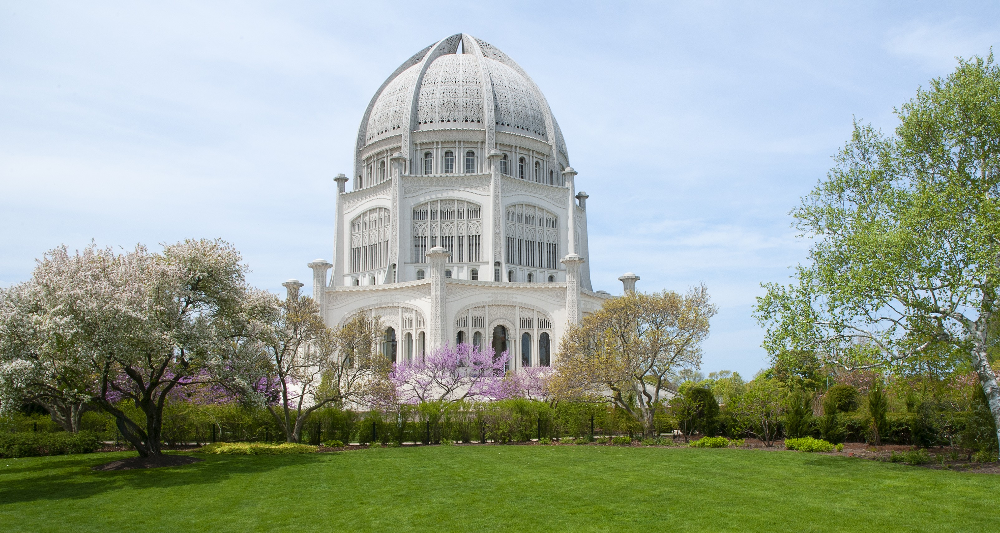

Baháʼí Temple
See one of the 8 North American continental Baháʼí houses of worship in Wilmette. It is the oldest of its kind still standing, the second one ever to be constructed. Located at: 100 Linden Ave, Wilmette, IL 60091

See one of the 8 North American continental Baháʼí houses of worship in Wilmette. It is the oldest of its kind still standing, the second one ever to be constructed. Located at: 100 Linden Ave, Wilmette, IL 60091